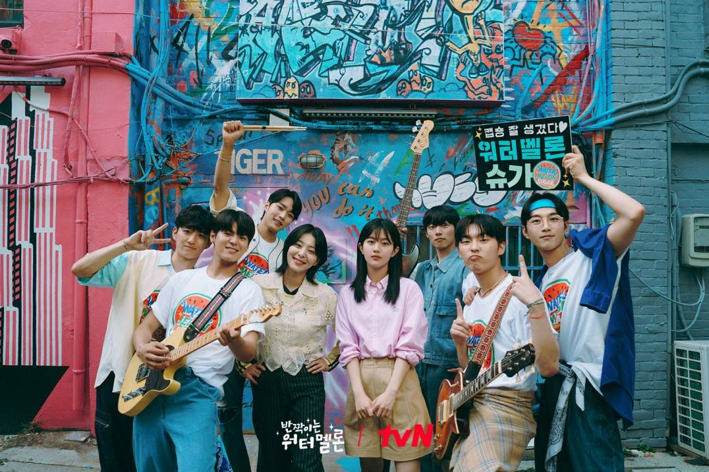
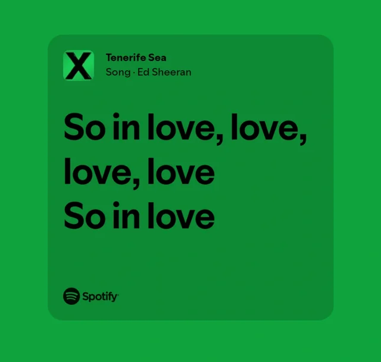

🍜
Eating
Food is one of the things I enjoy because it gives me comfort and happiness.

🏸
Playing Badminton
Playing badminton helps me stay active while having fun and spending time with others.

📺
Watching K-dramas
I enjoy watching K-dramas because of their stories, characters, and emotions.

🎵
Listening to Music
Music helps me relax, focus, and enjoy my free time.